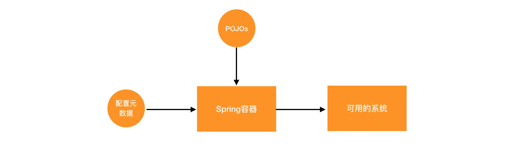
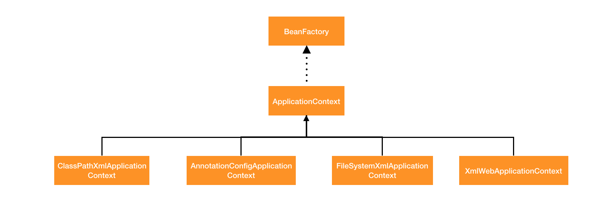
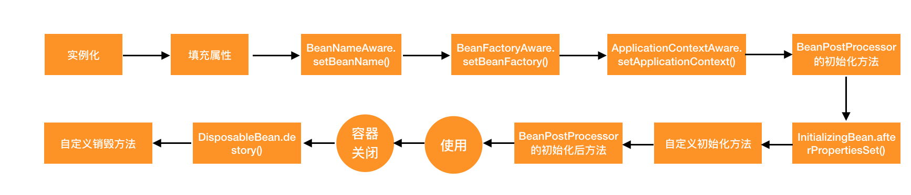

Spring系列之Spring的魅力在哪
Spring 如今毫无疑问是 Java 中最受欢迎的框架。Spring 已经成为事实上的 Java 企业级开发的标准。所以 Spring 到底为什么有这么大的魅力，通过这篇文章来简单聊聊。
本文基于 Spring5
为什么需要 Spring
因为 Spring 可以简化 Java 开发。传统 Java 开发的困难之一在于代码的耦合度很高，各个组件的侵入性很强。在这里耦合度高和侵入性表达的是同样的问题。看下这个简单的例子：
public class Soldier {
private Weapon weapon;
public void Soldier() {
weapon = new Knife();
}
}
public class Knife implements Weapon {
}
public interface Weapon {
}
上面的代码坏在哪里？没错，就是代码的耦合度太高了，也可以说 Weapon 的侵入性太强。这样一来 Soldier 只能持有 Knife，想换一把武器就得修改一次代码，这对于运行的系统来说肯定是不能被接收了。实际要解决这个问题其实也很简单，只要做一点小小的改动：
public class Soldier {
private Weapon weapon;
public void Soldier(Weapon weapon) {
this.weapon = weapon;
}
}
public class Gun implements Weapon{
}
Weapon gun = new Gun();
Soldier s = new Soldier(gun);
做了一点小小的改动之后，好多了，这下 Soldier 想用什么武器就用什么武器，而不用换武器都需要修改 Solider 的代码。这个其实就是 Spring 的核心特性之一：依赖注入。但这样还是挺麻烦，每次都需要手动的去 new 一个对象，然后作为一个参数传进去，这个问题自然也有解决的办法，我们后面再讲。再来说一下引起代码复杂度的另一个原因。
有时候除了写业务代码之外，我们还需要做很多的其他的工作，比如安全检查，打日志等等，如果按照正常我们常用的写代码的方式，如下:
public class Soldier {
private Weapon weapon;
public void Soldier(Weapon weapon) {
this.weapon = weapon;
}
public void fight() {
FightLog.fightLogBefore();
weapon.attack();
FightLog.fightLogAfter();
}
}
public class FightLog {
public static void fightLogBefore() {
System.out.println("Fight begin");
}
public static void fightLogAfter() {
System.out.println("Fight after");
}
}
如果我们要记录 Soldier 打斗的全过程，就不得不在打斗开始和结束的地方进行记录。这些记录打斗日志的代码会出现在系统的各个地方，而且和实际的业务逻辑无关，所以这样就会使代码变得很混乱，而且也有很多重复的代码。Spring 为这个问题也准备了一个解决方法：面向切面编程（AOP）。
这两个问题也是日常开发中最容易遇到的问题，Spring 的核心目标就是为了解决这两个问题，以此来简化 Java 的开发，而且 Spring 也做到了。
什么是 Spring 容器
很难精确的使用语言去描述什么是 Spring 容器。Spring 容器就像是一台机器，你需要往里放两种原料，然后这台机器就能把你想要的系统给你生产出来。两种原料一种是业务类（POJOs）和配置数据。就像下面这个图所示：

POJO: Plain old Java Object，代表的就是普通的 Java 类
配置数据: 配置各个 POJO 之间的依赖关系
Spring 容器说到底是装东西的，里面装的是 Spring Bean，也就是 POJO，这些 Bean 的生命周期都由 Spring 来管理。
Spring 容器的实现
在 Spring 中，容器的实现不止一种。每种不同的容器都实现了 BeanFactory。这么多的容器实现是为了应对不同的情况，比如 Web 开发就需要一些额外的特性。还有为了方便不同的配置文件，也实现了不同的容器，这些容器最核心的目标都是用来管理 Bean。容器的继承关系很复杂，就不完整列出了。下面是其中几个比较关键的容器实现：

上面的每一个容器都可以直接使用，但是很少会直接使用 BeanFactory，一般都会使用 ApplicationContext 及其子类。ApplicationContext 及其子类提供了更多的服务，比如从配置文件中加载信息等等，可以应对不同类型的 Spring 应用。
以 ClassPathXmlApplicationContext 容器配置为例：
<?xml version="1.0" encoding="UTF-8"?>
<beans xmlns="http://www.springframework.org/schema/beans" xmlns:xsi="http://www.w3.org/2001/XMLSchema-instance"
xmlns:context="http://www.springframework.org/schema/context" xsi:schemaLocation="http://www.springframework.org/schema/beans
https://www.springframework.org/schema/beans/spring-beans.xsd http://www.springframework.org/schema/context https://www.springframework.org/schema/context/spring-context.xsd">
<bean id="gun" class="cn.rayjun.springdemo.springcontainer.Gun">
</bean>
<bean id="solider" class="cn.rayjun.springdemo.springcontainer.Soldier">
<constructor-arg name="weapon" ref="gun"/>
</bean>
</beans>
上面我们说到了 Spring 容器需要两种原料，上面这个 xml 配置文件就是配置数据，Soldier 以及 Weapon 和其子类就是 POJOs。在这个文件中，我们将各个 POJO 之间的依赖关系配置好。然后 Spring 容器就会根据这些配置生成一个可用的系统。配置数据除了使用 xml 之外，还可以使用注解和 Java 代码来进行配置，这部分后续再详聊。
这些容器也都提供了获取 Bean 的 API，如下：
ApplicationContext context = new ClassPathXmlApplicationContext("beans.xml");
Soldier s = context.getBean("soldier");
但是永远不要用上面那种方式来获取 Bean，容器本来就是用来解耦的，如果用上面那种方式，根本就没有起到解耦的目的。具体使用方式在后续文章中详解。
Spring Bean 的生命周期。
Spring Bean 是容器管理的基本单位。Spring Bean 与普通的 Java 对象没有什么区别。
每一个 Java 对象都有其生命周期，从对象被创建出来，到最后被回收，Spring Bean 自然也不例外，只是 Spring Bean 的生命周期要比普通的类稍微复制一点，但这些复杂的过程都是由容器来进行管理的，不需要开发者做额外的事情。而且开发者可以通过配置来决定一个 Bean 的生命周期。

其中一些陌生的类名不知道没关系，这里也不需要关注，后续分析源码的时候我们再聊，在这里我们需要关注两个地方，就是在 Bean 初始化和回收的时候，可以调用我们自定义的初始化和销毁方法，这个还是非常有用的。
Spring 的两大特性
Spring 有两大特性：依赖注入（DI） 和 面向切面编程（AOP）。
上面其实已经聊到了，Spring 的这两大特性其实就是用来解决 Java 编程的两大痛点。
依赖注入的目的是代码解耦。当然完全的解耦是不可能的，类之间没有交互，程序就无法跑起来了。
依赖注入的实现方式很简单，上文中将 Weapon 的实例通过构造函数传入就是依赖注入的一种实现。另一种注入的方式就是通过 Setter 方法来进行注入。依赖注入本身除了名字比较高端，其实比较简单，但是有一点需要注意，依赖注入经常会和面向接口编程一起出现，也就是说依赖注入需要使用多态的特性来使得解耦更加彻底。假如不使用接口编程，上面的代码会编程什么样呢：
// 用刀的 Soldier
public class Soldier {
private Knife knife;
public void Soldier(Knife knife) {
this.knife = knife;
}
public void fight() {
knife.attack();
}
}
假如说我要把刀换成枪，只能通过该代码来完成。
// 用枪的 Soldier
public class Soldier {
private Gun gun;
public void Soldier(Gun gun) {
this.gun = gun;
}
public void fight() {
gun.attack();
}
}
也就是说，如果不使用多态，依赖注入的威力顿时没了 90%。
在 Spring 中，注入这个操作是 Spring 容器来完成的，需要开发者将各个 Bean 之间的依赖关系在配置中定义好，代码中基本不会出现 new 这个关键字，但是整个程序却跑起来了。
依赖注入经常会和控制反转一起出现，这两个概念之间有什么关系吗？实际上可以说依赖注入是控制反转的一种实现。在没有 Spring 之前，如果需要对象，我们都需要手动 new 一个，而现在，所有的对象都不要自己来 new 了，这些事情都交给 Spring 容器来做了，也就是把生成对象的权利交给了 Spring 容器，所以 Spring 容器也称之为 IOC 容器。
Spring 的另一大特性叫面向切面编程（AOP）。DI 的目标是使得代码之间的耦合度更低 （低耦合），那么 AOP 的目标就是使代码的职责更加单一，提高代码的可复用性 （高内聚）。
AOP 中引入了一个新的概念：切面 和 切点。我们可以把每一个 Bean 都配置为一个切面，Bean 中的每一个方法都可以配置为一个切点。
FightLog 类改造如下，那么在 Soldier 在 fight 方法执行之后，战斗的过程也会被记录下来。这就是 AOP 的威力，不需要修改代码，就可以增加切面的方式来使代码变得整洁。
@Aspect
public class FightLog {
@Before("execution(* cn.rayjun.springdemo.springcontainer.Soldier.fight(..))")
public static void fightLogBefore() {
System.out.println("Fight begin");
}
@After("execution(* cn.rayjun.springdemo.springcontainer.Soldier.fight(..))")
public static void fightLogAfter() {
System.out.println("Fight after");
}
}
public class Soldier {
private Weapon weapon;
public void Soldier(Weapon weapon) {
this.weapon = weapon;
}
public void fight() {
weapon.attack();
}
}
如果不使用 AOP，这些与业务无关的代码会到处都是，而且会破坏代码职责单一性。常见的场景就是日志，我需要给某些点打日志，但是又不想代码中到处都是日志代码，那么使用 AOP 就是一个比较好的选择了，具体的原理后续的文章中再详细说。
Spring的这两大特性将面向对象的思想实践的淋漓尽致。学会了 Spring，也就真懂面向对象编程了。
Spring 模块的架构图
Spring 已经演化到了第 5 个大版本了，所以 Spring 远远不只有容器了。实际上，Spring 已经为建设企业级应用的方方面面都给出了解决方案，可以用 Spring 来建设多种类型的应用。
Spring 的核心架构图：
为了让开发者使用 Spring 更加便利，SpringBoot 就诞生了，SpringBoot 并不是一个新的技术，而是官方对 Spring 框架做了一个封装。
Spring 框架强大，使用简单，可以应对各类应用。在面对一个复杂的系统时，Spring 的依赖注入和 AOP 特性可以简化系统架构，让普通程序员也可以构建出不差的系统。